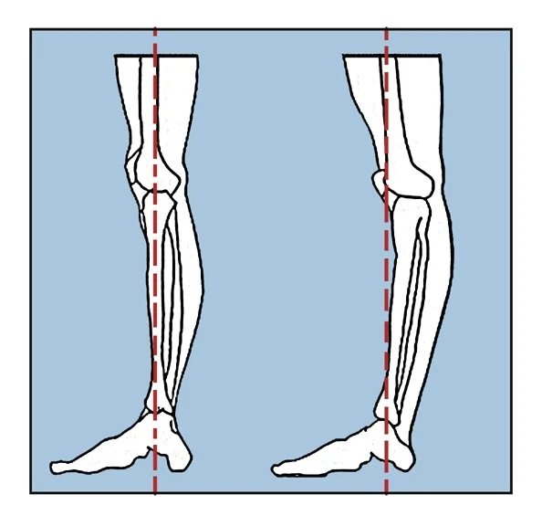
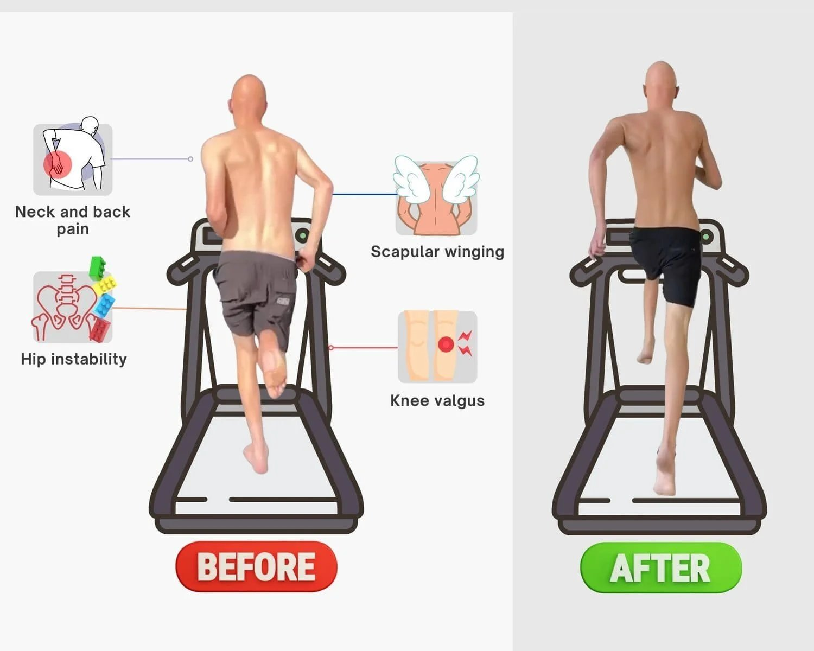

Why Hyperextended Knees Indicate Poor Biomechanics
A hyperextended knee is often misunderstood as a flexibility issue, when in reality it reflects a breakdown in how your entire kinetic chain distributes tension. When the backline—hamstrings, calves, and glutes—is weak or inactive, the body shifts responsibility to the quadriceps and anterior tissues. This causes the knee to lock backwards in standing, walking, or even during simple daily tasks. At Functional Patterns Brisbane, we rarely see a hyperextended knee as an isolated joint problem. Instead, it’s a symptom of poor biomechanics, collapsed posture, and inefficient gait patterns that push excessive force into the front of the leg.
When the spine lacks rotation, when the pelvis tilts forward, or when breathing mechanics pressurise the core incorrectly, the knee becomes the “escape route” for tension. Over time, this creates instability, ligament strain, and chronic discomfort. Improving a hyperextended knee requires retraining how the body distributes load—not stretching or forcing the knee into position. Through gait analysis, re-tension strategies, and posterior-chain activation, we restore balance through the entire system so the knee can stabilise naturally and stop collapsing backward.
Before we begin, it is important to know that all hypermobility comes with areas lacking in mobility. Your body has a certain amount of tension and the goal is to evenly distribute this tension around your body. The only way to achieve this is through correcting your biomechanics/movement patterns.
-
Definition of hyperextended knees: Hyperextension occurs when the knee joint extends beyond its normal range. This places stress on ligaments and altering the natural alignment of the leg. This typically happens when the individual is standing or performing dynamic movements. It causes the knees to “lock” in an excessive backward curve.
-
Potential issues: This misalignment can cause joint instability. It can also increase the risk of ligament tears, cartilage damage, and early arthritis. It can also negatively impact performance in sports or daily activities, reducing strength and flexibility.
If you want to understand why your hyperextended knee developed and how to correct it long-term, you can book a posture and gait assessment to identify the exact tension imbalances causing the issue.

Backline/Frontline Mechanics and Imbalances Leading to Hyperextended Knees
- Frontline mechanics:
The front of the body, particularly the quadriceps, tends to overwork when the backline is weak. This imbalance shifts the centre of gravity forward, leading to excessive strain on the knees. The quadriceps pull on the knee joint, often resulting in hyperextension, especially during standing or walking.
- Backline mechanics:
The backline refers to the posterior chain of muscles, including the hamstrings, calves, glutes, and lower back. These stabilising muscles should balance the body during movement. When the posterior chain is weak or inactive, the body compensates. It does so by over-relying on the quadriceps and other muscles at the front.
- Imbalance and hyperextension:
An imbalance between the frontline and backline mechanics can lead to instability in the knee joint, causing hyperextension. This is particularly true for weak hamstrings and under-active glutes. The hamstrings help to control knee flexion, and their weakness may result in inadequate support, making hyperextension more likely.
As you can see, there is no such as thing as a naturally hyperextended knee. Mechanical and fascial issues cause hyper extension of the knees.

Main Issues and Other Factors Affected by Hyperextended Knees (Backline Considerations)
-
Backline stress: When the backline, particularly behind the knee, is not functioning optimally, hyperextension places additional stress on the posterior ligaments and tendons. This can cause micro-tears, inflammation, and long-term joint instability. Hyperextended knees naturally overstretch without any effort.
-
Compromised posture: Hyperextended knees alter posture. They lead to an anterior pelvic tilt and arching of the lower back (lumbar lordosis). This disrupts the alignment of the entire spine, which can lead to chronic back pain.
-
Pelvic and hip dysfunction: The misalignment caused by hyperextended knees often spreads to the pelvis and hips. This creates compensation patterns. Hip flexors tighten, glutes weaken, and the risk of hip and lower back issues increases.
-
Foot and ankle problems: Hyperextended knees can also affect the lower extremities. Over time, the feet may develop flat arches (over-pronation) or increased risk of ankle sprains due to instability.
Exercises For Hyperextended Knees
If you're looking to increase the tension and integrity behind your knees, there are a few focus points.
Why are your knees hyper-extending in the first place?
This is a crucial question to answer before putting together an exercise routine. The best way to identify the true cause of the hyperextension is to have your gait or movement analysed.
As the beginning of this article mentions, extra-mobile tissue coexists with extra-tight tissue. While you are moving, it becomes clear to see which movement patterns are restricted and which patterns are flaccid.
Once you identify the movement patterns, you can directly address them through your exercises. Can you see now why this assessment step is so crucial?

Exercises To Avoid FOR HYPER-MOBILE KNEES:
Yoga/Passive Stretching: Many physical therapists prescribe stretching programs such as yoga to address pain and stiffness. You may have hyper-mobile knees, but you may also have tight quads, calf or another leg muscle.
Before passively stretching these tight areas out, we need to assess why they are tight to begin with. In fact, stretching areas that are over-compensating for the excessively mobile areas can further exacerbate the issue.
Instead, try myo-fascial release pared with an exercise aimed to re-tension the loose area. This will reduce the risk of adding to the imbalances.
Myo-fascial release involves releasing tight fascia (connective tissue) using a hard ball or pipe. You can find plenty of tutorials on youtube and google that go deeper into what it is and how to do it.
A re-tension exercise involves movements that help improve muscle activation and joint stability. It works by restoring balance between different muscle groups. This method encourages the activation and engagement of under-active muscles while ensuring proper tension across the kinetic chain. This type of movement benefits muscles that may become overstretched or inactive because of compensation patterns.

Mechanics of Re-tension Exercises:
Reciprocal Inhibition and Muscle Co-Activation:
Muscles work in antagonistic pairs. When one muscle contracts (the agonist), the opposing muscle (the antagonist) must relax and stretch. This is what allows for smooth movement.
We know this phenomenon as reciprocal inhibition. For example, when you extend your knee, the quadriceps (front of the thigh) contract while the hamstrings (back of the thigh) stretch and relax.
In a re-tension exercise, the goal is to control this relationship. We want to ensure that both muscle groups engage as they should. For instance, the hamstrings should not remain completely relaxed but should maintain slight activation to stabilise the joint. This controlled co-activation of agonist and antagonist muscles helps create balance.
Restoring Tension Balance:
Overactive muscles are often too tight or short (e.g., quadriceps). Under-active muscles (e.g., hamstrings or glutes) may remain lengthened or weak. This leads to poor joint mechanics like hyperextended knees.
Re-tension exercises focus on teaching the body to engage the under-active muscles correctly . Especially during movements that involve stretching their antagonists. By re-activating under-utilised muscles, the body re-distributes tension. This prevents over-extension of joints like the knees or lower back.
Example of hyperextended knee exercises - Hamstring Re-tension During Knee Flexion:
In the context of hyperextended knees, the hamstrings and glutes may be too weak or disengaged. This leads to a dominance of the quadriceps and over-extension of the knee joint. A hamstring re-tension exercise would involve teaching the hamstrings to engage and hold tension while the knee is being straightened.
Mechanics:
Begin with a light hip hinge movement (similar to a deadlift or Romanian deadlift). As you lower your torso by bending at the hips, the hamstrings lengthen.
While the hamstrings stretch, they are actively engaged—this is the re-tension aspect. Instead of allowing them to passively stretch and relax, you maintain tension in the muscle fibres.
Simultaneously, the quadriceps should be active enough to support the knee but not overtake the movement. This prevents them from pulling the knee into hyperextension.
This co-activation retrains the posterior chain to share the load and improve balance between the front and back of the body.

Lunge performed with re-tension strategy
Preventing Overcompensation:
Re-tension exercises aim to prevent the body from relying too much on certain muscles while others face neglect. For instance, in people with hyperextended knees, the quadriceps may dominate movement patterns. This could lead to over-reliance on the anterior chain (front of the body).
By actively engaging the backline muscles, re-tension exercises balance the load, improving posture and movement efficiency.